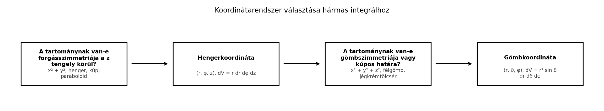

A hármas integrál Descartes-koordinátákkal akkor is kiszámítható, ha
a tartomány bonyolult, de a határok felírása gyakran nehézkes.
Gondoljunk egy hengerre: az
,
tartomány Descartes-koordinátákkal
alakú, és a gyökös határok miatt a
számolás fáradságos. Gömbnél még rosszabb a helyzet: a
típusú határok miatt az integrálás áttekinthetetlenné válik. A henger-
és gömbkoordináták pontosan arra szolgálnak, hogy a forgásszimmetrikus
tartományokat azok természetes koordinátáiban írjuk le.
26.2.2 Szemléletes kép
A hengerkoordináták a síkbeli polárkoordináták
párját egészítik ki a
magassággal. Egy pontot tehát a
-tengelytől
mért
távolság, a
-tengely
körüli
szög és a
magasság azonosít. A gömbkoordináták ezzel szemben az origótól mért
távolságot, a
tengellyel bezárt
szöget és a
-tengely
körüli
azimutot használják. A térfogatelemek geometriai jelentését az alábbi
döntési fa is segít felidézni.

Koordinátarendszer választása hármas
integrálhoz - A döntési fa a tartomány algebrai szerkezete alapján
készült; szemléltetés, nem bizonyítás.
Az ábra nélkül: ha a tartományt
kifejezéssel lehet egyszerűen leírni, hengerkoordináta; ha
vagy kúpfelület szerepel, gömbkoordináta a kézenfekvő.
26.2.3 Hengerkoordináták és a
térfogatelem
Definíció. A térbeli pont hengerkoordinátái
,
ahol
és
,
,
.
A
-tengely
pontjaira
,
és ott
tetszőleges.
A térfogatelem levezetéséhez tekintsünk egy kis cellát, amelyet a
koordinátafelületek határolnak:
és
közötti hengerpalást,
és
közötti félsík, valamint
és
közötti vízszintes sík. A cella közelítőleg téglatest, amelynek méretei:
- radiális irányban
,
- kerület mentén
(az
sugarú körív hossza), - függőlegesen
.
Így a cella térfogata közelítőleg
Finomítás után a határátmenetben a
térfogatelem
(Erre a
szorzóra a későbbi Általános változócsere és a
Jacobi-determináns alfejezetben Jacobi-determinánsként is
visszatérünk.)
Ha
a hengerkoordinátákban leírt tartomány, akkor
ahol
a paramétertartomány.
26.2.3.1 Kidolgozott példa: henger
térfogata
Legyen
az
sugarú,
magasságú tömör henger:
Hengerkoordinátákban a tartomány
leírása:
A térfogat:
Belső integrál:
Ezután:
ami a jól ismert hengertérfogat. Az
ellenőrzéshez a mértékegységet is megvizsgálhatjuk:
térfogatdimenzió, a
dimenziótlan.
26.2.3.2 Kidolgozott példa: kúp
térfogata
A
egyenletű,
magasságú kúp tartománya:
(A
a kúppalást egyenlete hengerkoordinátákban.) A térfogat:
A belső integrál:
Ezután:
Az integrál:
Így
ami a
magasságú,
alapsugarú kúp ismert térfogata.
26.2.4 Gömbkoordináták és a
térfogatelem
Definíció. A térbeli pont gömbkoordinátái
,
ahol
és
,
,
.
Itt
az origótól mért távolság,
a
tengellyel bezárt szög,
pedig az
-síkbeli
azimut. A
-tengelyen
vagy
,
és ott
tetszőleges; az origóban
és
sem egyértelmű.
A térfogatelem geometriai levezetése hasonló. Tekintsük a kis cellát,
amelyet a következő felületek határolnak:
és
közötti gömbfelület,
és
közötti kúpfelület,
és
közötti félsík. A cella közelítőleg téglatest, amelynek oldalhosszai: -
radiális irányban
,
- hosszúsági kör mentén
(az
sugarú körív hossza), - szélességi kör mentén
,
mert a szélességi kör sugara
.
Ezért a cella térfogata közelítőleg
Finomítás után a térfogatelem:
Figyeljünk a
tényezőre: ez tükrözi, hogy a szélességi körök a pólusok felé
összehúzódnak.
Az alábbi ábra a cellát a
pontnál mutatja:
,
(a
tengelytől mérve),
(az
-síkban
a
tengelytől),
,
.
Az élek
,
és
.
A jobb oldali panel szerint ugyanakkora
,
mellett a cella a pólus közelében
(,
)
sokkal keskenyebb, mint az egyenlítőn
().
Az
sugarú tömör gömb:
A térfogat:
Belső integrál:
Ezután:
A
szerinti integrál:
Ezért
ami a gömb ismert térfogata.
26.2.4.2 Kidolgozott példa:
jégkrémtölcsér
Legyen a tartomány az
sugarú gömb belsejének az a része, amely egy
félnyílásszögű, origó csúcsú,
-tengelyű
kúp fölött helyezkedik el. Gömbkoordinátákban a kúp egyenlete
,
így a tartomány:
A térfogat:
A kiszámítás:
Ha
,
akkor
,
ami a félgömb térfogata. Ha
,
akkor
,
így
.
Ez a jégkrémtölcsér alakú tartomány térfogata, és a képlet mutatja,
hogyan függ a kúp nyílásszögétől.
26.2.5 Számolási recept: henger-
vagy gömbkoordinátás integrál
Határozd meg a szimmetriát. Ha a tartományt
vagy
jellemzi, válassz henger-, illetve gömbkoordinátát.
Írd át a tartományt az új koordinátákra.
Hengerkoordinátánál
,
,
intervallumok; gömbkoordinátánál
,
,
intervallumok. Ügyelj a standard tartományokra: hengernél
,
gömbnél
,
.
Helyettesítsd be a függvényt. Például
,
.
Szorozd be a térfogatelemmel. Hengerkoordinátánál
,
gömbkoordinátánál
.
Integrálj iteráltan. A határok általában
egyszerűbbek, és gyakran a
szerinti integrál
-t
ad.
Ellenőrizd az eredményt. Hasonlítsd össze ismert
térfogatképlettel, vagy vizsgáld a mértékegységet.
26.2.6 Valós életbeli alkalmazás: a
Föld tömege rétegzett sűrűségmodellel
A Föld közelítőleg gömb alakú, ezért a tömeg számításához a
gömbkoordináták természetesek. A sűrűség a Föld belsejében csak a
középponttól mért
távolságtól függ, azaz
.
A tömeg:
A
és
szerinti integrálok függetlenek a sűrűségtől:
Ezért
Ez a képlet azt fejezi ki, hogy a
a
és
közötti vékony gömbhéj térfogata, és a tömeget gömbhéjanként
összegezzük.
Vegyünk egy egyszerű, kerekített modellprofilt:
ahol
a középponti,
a felszíni sűrűség (ezek modellértékek, nem mérési adatok). Legyen
,
,
.
Ekkor
Az integrál:
és
Így
Közös nevezőre hozva:
Tehát
A számadatokkal:
Az
közelítőleg
.
Ezért
A kapott érték nagyságrendje egyezik a
Föld ismert tömegével, de hangsúlyozzuk: a lineáris sűrűségprofil durva
modell, a paraméterek kerekített, szemléltető értékek. A modell
korlátja, hogy a Föld sűrűsége valójában nem lineárisan, hanem rétegesen
változik (kéreg, köpeny, külső és belső mag), és a forgás miatti
lapultságot is elhanyagoltuk.
26.2.7 Tipikus hibák
A
tényező elhagyása gömbkoordinátáknál. Ha
-ként
szerepel, a gömb „térfogata”
lenne a helyes
helyett. A helyes képlet
.
A szögek határainak felcserélése. Gömbkoordinátánál
a
intervallumot futja be,
a
-t.
Ha
-t
és
között vesszük, akkor
miatt a gömb „térfogatára”
adódik: a
szakaszon
,
és ez kioltja a helyes részt. (A pontokat ráadásul kétszer járnánk
be.)
A
határ hibás megadása hengerkoordinátánál. Például kúpnál a
nem független
-től,
hanem
vagy
.
A tartomány határait az új koordinátákban kell felírni, nem a
Descartes-koordinátákban.
A henger- és gömbkoordináták
jelének összekeverése. Hengerkoordinátánál
a
-tengelytől
mért távolság, gömbkoordinátánál az origótól mért távolság. Ugyanaz a
betű más jelentést hordoz, ezért a feladat elején mindig érdemes
rögzíteni, melyik rendszerben dolgozunk.
26.2.8 Önellenőrzés
Írd fel a hengerkoordináták transzformációját, és mondd meg, mi a
térfogatelem.
Mi a gömbkoordináták standard tartománya
,
,
esetén?
Miért nincs szükség
szorzóra a Descartes-koordinátás
-ben,
hengerkoordinátánál viszont igen?
Számítsd ki az
sugarú,
magasságú henger térfogatát hengerkoordinátákkal.
Írd fel gömbkoordinátákban az
sugarú,
félgömb térfogatintegrálját.
26.2.9 Feladatok
1. feladat (A). Hengerkoordináták segítségével
számítsd ki a
paraboloid és az
-sík
által határolt test térfogatát.
2. feladat (A). Gömbkoordinátákban írd fel és
számítsd ki az
sugarú félgömb
()
térfogatát.
3. feladat (B). A
kúp és a
sík közötti tartomány sűrűsége
(kg/m³). Számítsd ki a tartomány tömegét.
4. feladat (B). Az
sugarú gömb belsejében a
félnyílásszögű kúp fölötti rész térfogata mennyi? (Ez egy jégkrémtölcsér
alakú tartomány.)
5. feladat (C). Vezesd le aprólékosan a
gömbkoordináták térfogatelemét: mutasd meg, hogy a
,
,
cella oldalhosszai
,
,
,
és ebből
.
6. feladat (D). Egy ipari gömb alakú tartály belső
sugara
.
A benne tárolt folyadék sűrűsége a középponttól mért távolsággal
lineárisan csökken:
kg/m³ (modellérték). Számítsd ki a folyadék tömegét.
26.2.10 Megoldások
26.2.10.1 Önellenőrzés –
válaszok
,
,
;
.
,
,
.
Descartes-koordinátáknál a cella oldalai
,
,
,
így
.
Hengerkoordinátánál a kerület menti ívhossz
,
ezért a cella térfogata
,
és határátmenetben
.
.
,
,
;
az integrál
.
1. feladat megoldása. A paraboloid és az
-sík
metszete:
esetén
,
tehát a vetület az
sugarú kör. Hengerkoordinátákban a tartomány:
A térfogat:
Belső integrál:
Ezután:
A
szerinti integrál
,
így
Ellenőrzés: a paraboloid alatti
térfogat képlete
lenne
,
esetén
,
egyezik.
2. feladat megoldása. A félgömb:
,
,
.
A térfogat:
3. feladat megoldása. A kúp és a sík metszése:
.
A tartomány hengerkoordinátákban:
A sűrűség
.
A tömeg:
Belső integrál:
A radiális integrál:
Végül a
szerinti integrál
,
így
A mértékegység: a sűrűség kg/m³, a
térfogat m³, a tömeg kg. Az eredmény
kg.
4. feladat megoldása. A tartomány:
,
,
.
A térfogat:
5. feladat megoldása. Vegyünk egy
pontot, amelynek gömbkoordinátái
.
A koordinátafelületek által kimetszett kis cella csúcsai a
,
,
,
,
,
értékeknél vannak.
A radiális irányú él hossza nyilván
,
mert a
koordináta csak ezen él mentén változik.
A
irányú él a
sugarú körön fekszik, és
középponti szöghöz tartozik, ezért ívhossza
.
A
irányú él a
sugarú szélességi körön fekszik (a
-tengelytől
való távolság
),
ezért ívhossza
.
Mivel a cella közelítőleg téglatest, térfogata
A finomítás határátmenetében az
infinitezimális térfogatelem:
Ez a levezetés mutatja, miért jelenik
meg a
:
a szélességi körök kerülete a pólusok felé csökken.
6. feladat megoldása. A tömeg gömbkoordinátákban:
A szög szerinti integrálok:
Ezért
Az integrál:
és
Így
Tehát
Ellenőrzés: az átlagos sűrűség
nagyjából
kg/m³, a gömb térfogata
m³, így a tömeg
kg, ami összhangban van a pontos értékkel.
26.2.11 Rövid összefoglaló
A hengerkoordináták
a polárkoordináták térbeli kiterjesztései, és a térfogatelem
A gömbkoordináták
a
-tengellyel
bezárt
szöget és az azimutot
használják, a térfogatelem pedig
A levezetés kulcsa, hogy a cella
kerület menti oldalhossza
,
illetve
,
ezért lép fel az
és a
szorzó. A hengerkoordinátákat forgásszimmetrikus,
-es
tartományokra, a gömbkoordinátákat gömbszimmetrikus vagy kúpos határú
tartományokra érdemes használni. Továbbvitt eredmény: a
gömbkoordinátás térfogatelemre épülnek az Alkalmazások: térfogat, tömeg, gravitáció és
elektrosztatikus tér, a Paraméteres felületek és
felszín és a A Gauss–Osztrogradszkij-tétel
(divergenciatétel) alfejezetek; a hengerkoordinátás térfogatelemet
pedig a A Stokes-tétel és a Maxwell-egyenletek
alfejezetben használjuk hengerpalástokon. A kidolgozott példák (henger,
kúp, gömb, jégkrémtölcsér) és a Föld tömegére adott rétegzett
sűrűségmodell mutatják a módszer erejét.
26.2.12 Források és ellenőrzési
hiányok
Az alfejezet klasszikus kalkuluseredményekre épül, elsősorban a
többváltozós integrálás standard anyagára (Stewart, Thomas,
Marsden–Tromba tematikája). A Föld tömegére vonatkozó sűrűségprofil és a
numerikus modellparaméterek szemléltető, kerekített értékek, nem
tekintendők mért adatoknak; a tényleges Föld-sűrűségprofil szakirodalmi
adat, amelynek ellenőrzése forrás nélkül nem állítható.